- Módulo: Sistemas Operativos
- Título del trabajo Repo A1
- Componentes del grupo: Cinthia Vargas Jiménez
- Curso Académico: 2014/2015
Modificaremos la ip de nuestro servidor , en mi caso 172.16.108.21
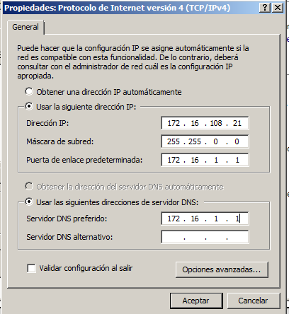Cambiaremos el nombre de nuestro equipo y el nombre del dominio al que le indicaremos Aula108
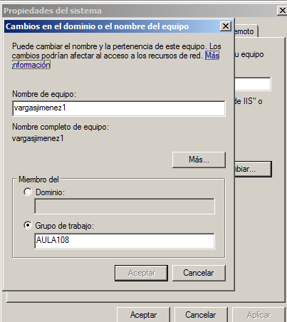Iremos al asistente y agregaremos el rol de Servicios de archivos
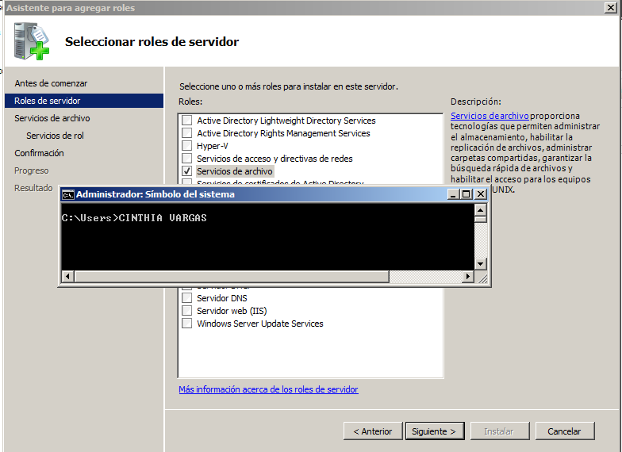Comprobamos si tenemos para los servicios NFS.
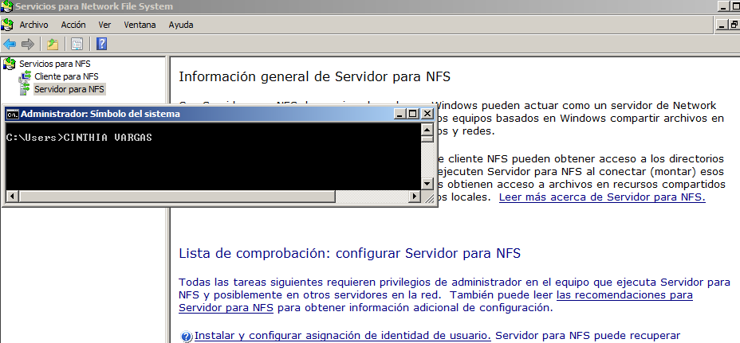Este es el proceso para darle permisos de edición al usuario.
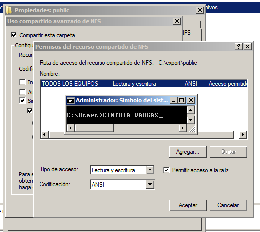Con este proceso le damos al usuario el privilegio de lectura, sin poder modificar el archivo.
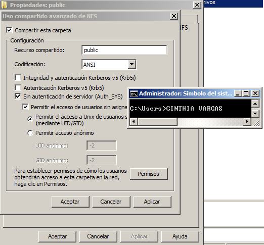Mediante esta acción hacemos el documento publico, para que todo el mundo pueda acceder a el, también sin la opcion de edición, solo lectura
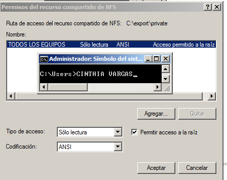Modificaremos el nombre del equipo y su dominio siendo el dominio Aula108.
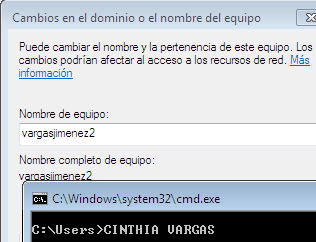En nuestro cliente instalaremos los componenetes necesarios para NFS , dirigiendonos a Características de windows y seleccionaremos Cliente para NFS
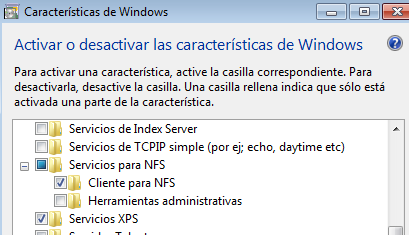Iniciaremos el servicio NFS, para ello abriremos como administrado una consola del sistema y ejecutaremos el siguiente comando : nfsadmin client start
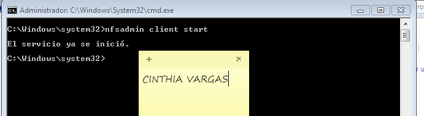El siguiente paso es montar nuestro sistema de ficheros exportado por NFS ejecutando: mount -o anon,nolock,r,casesensitive \\172.16.108.21\public *
*La ip que se especifica en el comando es la dirección ip de nuestro servidor
CARPETA PUBLICA
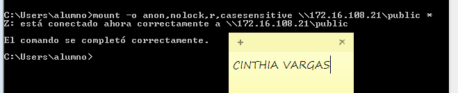CARPETA PRIVADA
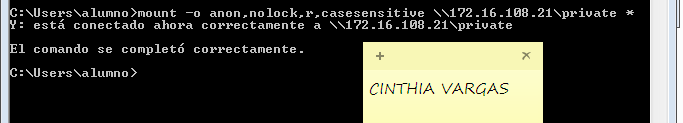En la siguiente captura nos muestra que efectivamente , en "public" nos permite crear cualquier fichero /carpeta
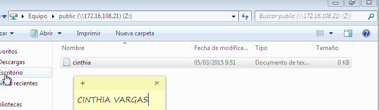En la siguiente captura se muestra que no podemos crear ninguna carpeta en "private"
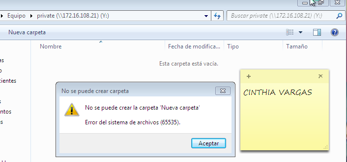Primero editaremos nuestra ip en el fiche /etc/network/interfaces , según se muestra en la siguiente captura de pantalla
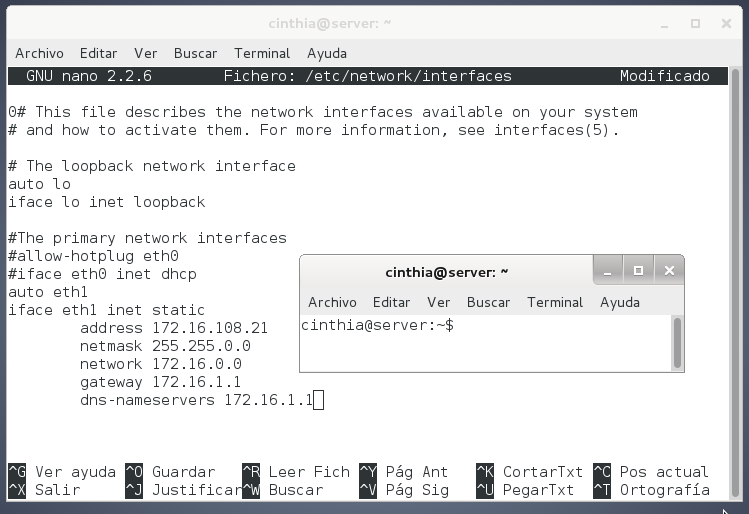En el siguiente paso primero ejecutamos el comando apt-get update para actualizar los repositorios e instalar NFS mediante el comando apt-get install nfs-common nfs-kernel-server
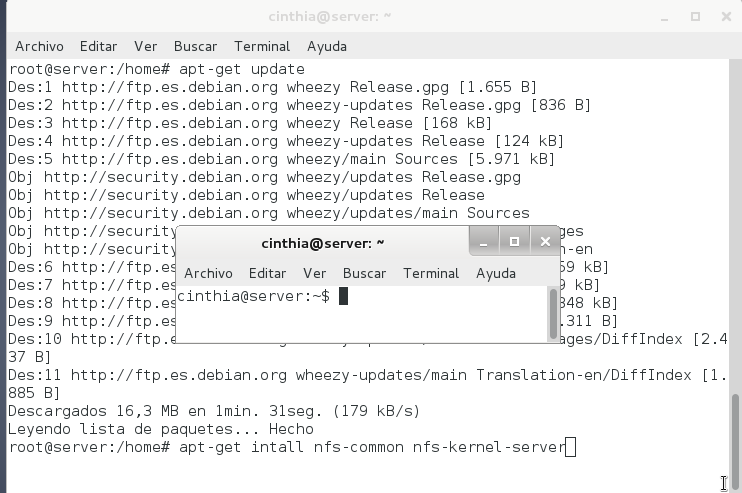Crearemos las siguientes carpetas con los permisos asignados correspondientes según muestra la captura de pantalla
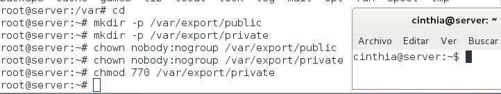Iniciamos la configuración, y nos dirigimos a /etc/exports añadiendo las siguientes líneas
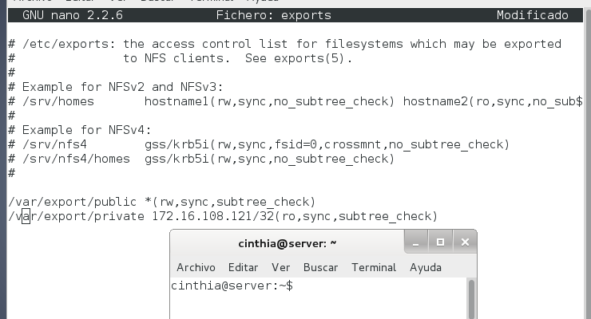Paramos e Iniciamos el servicio service nfs-kernel-server status/stop y start
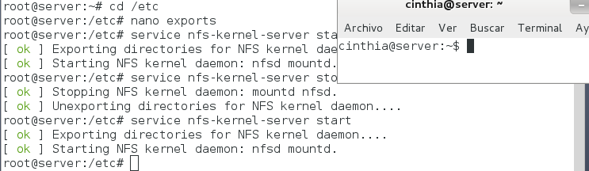Editamos la ip de nuestro cliente , la cual será 172.16.108.121
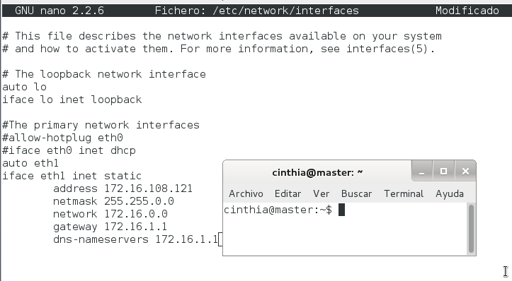 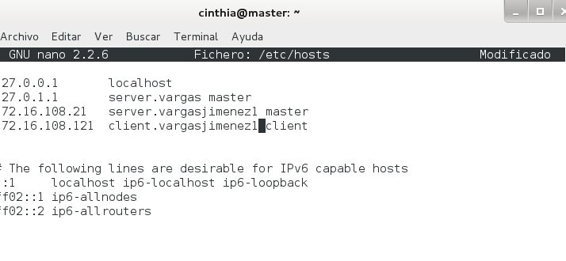Instalamos nmap
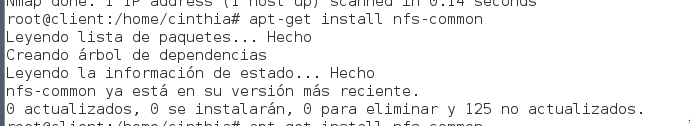Comprobaremos que nuestro cliente puede ver a nuestro servidor mediante ping y nmap
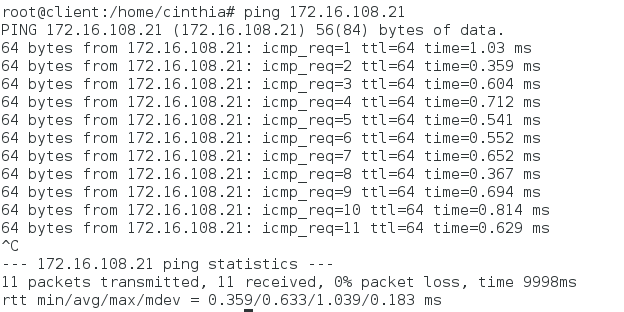 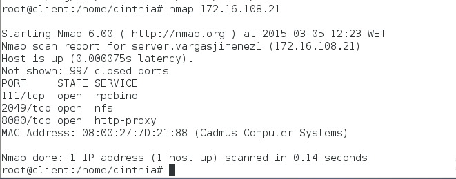El siguiente comando permite mostrar los recursos exportados por el servidor
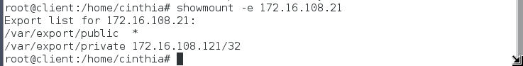Crearemos una carpeta remoto que contendrá a public
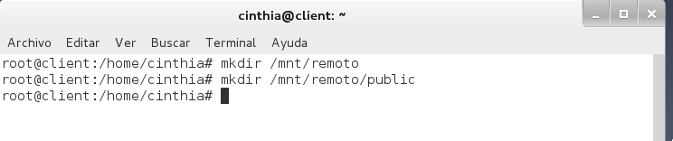Ejecutaremos el siguiente comando para montar los ficheros exportados por NFS
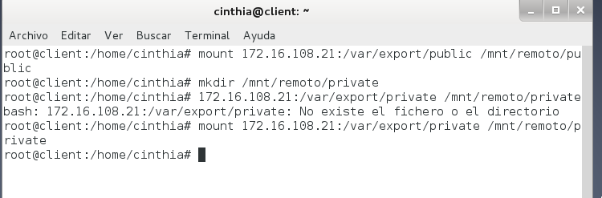Con el comando df -hT , podemos ver los recursos remotos montados en nuestras carpetas
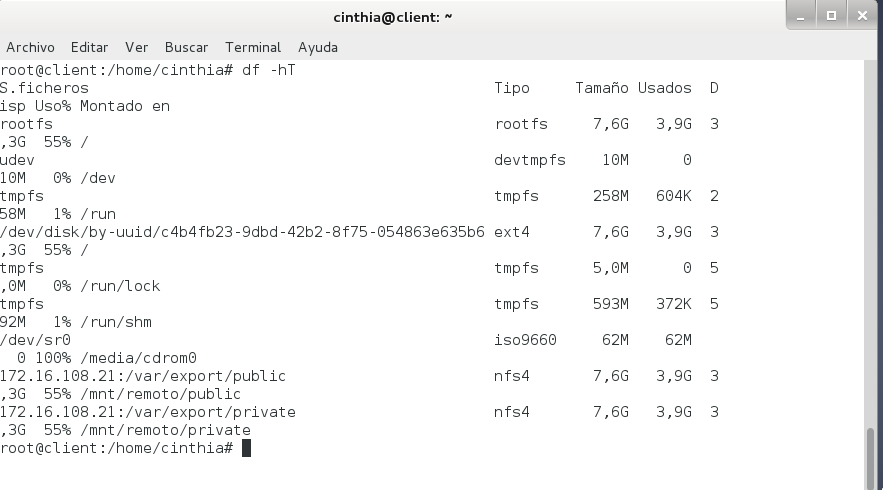Nos ubicamos dentro de la carpeta publica y si nos deja crear un archivo
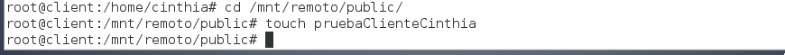Según muestra la captura de pantalla , en la carpeta "private" no podemos crear ningun archivo
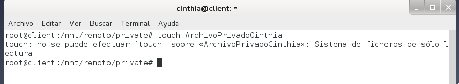Fichero fstab modificado
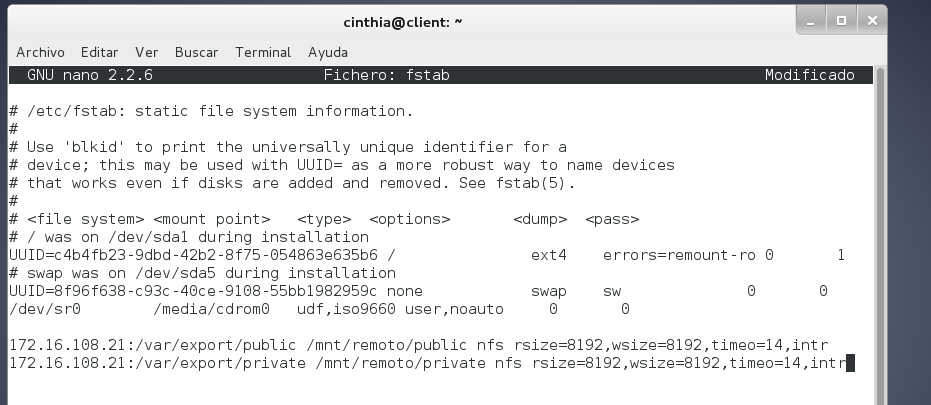